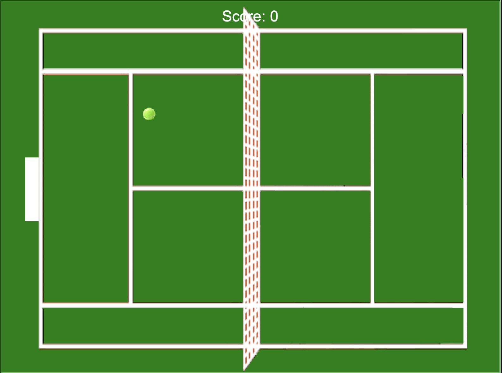

This is my Portfolio Page!
On our second day we were tasked to play around with lightbot. A online game where you have to make the robot light up blue tiles using commands.
This is the result of me and my team working on PLTW 1.1 for around 2-3 weeks. We intergrated all that we learned into this one project and this was the final result. Where we made an
image within and image withing an image. Then we shifted those images so that it looked like the images would teleport from one coordinate to another. This was the best idea we could think
of as we tryed puting most of the things we learned in this activity.
After we worked through 1.2 problems, me and my team again put everything we knew into one project. This time we decided to make the famous Snake game, where you eat an apple and get an
increase in the body length. We made the snake head a circle, and the food a triangle. Each time the snake head is within a distance of 20, the segements increase (so we appeneded a circle
each time food was touched). Also making food worth 10 points each, and setting score = 0 and high_score = 0, and rewriting high_score to score if score > high_score.

In project 1.2.5, we were asked to make a project that included many of the things we previously learned. They include user input, color management and movement, list indexing, manipulating strings,
responding to events, reducing redundant code, useing existing turtle methods, choosing descriptive variable names, and comment the code sections. Our group brain stormed many ideas after
reading the requirements, and then we decided from many games like "escape the maze", "Out", "Pong", "Break Out", and "Tennis". Ultimatly we decided to go with tennis as it seemed the most
fun to create. So after we decided to make tennis we started writing out pseudocode and then after we coded. In short, we made single player tennis and multiplayer tennis. To choose which
one you want to play, you would input "m" for multiplayer or "s" for single player. In multiplayer you have two "rackets" to hit the ball with, one on the left and one on the right. With
a ball which starts in the middle and will go a random way when the game starts. While single player is the same thing except there is no racket on the right, but a invisible wall on the
right to which you can see how long you can last. To create this, we made turtles for the rackets so we could move them later, a turtle for the ball, and a turtle for pen so we can write
stuff. To actually make the rackets move when we click something, we made functions called "bar_up" and "bar_down", so that when someone clicks on the key which makes the racket go up, the
window will "wn.listen" to when they do it, and move the bar up and down. Then to make sure that the racket and ball touches, and also if the ball touches the paramateres, we had to limit the
area of motion the ball which it can move to. But basically, we just set it up so that when the ball and racket are within a certain number of pixels between them. We would reverse the
direction of the ball, by making the ball multiplying itself by -1, which reflects it. Then below is the product of our creation.

This is the Scratch project we created, it's a simple game of Rock Paper Scissors against an AI who randomly picks 1 of the 3 choices. In order to let the AI choose a random choice, we set
rock, paper, ans scissors as variables. And then set rock = 1, paper = 2, and scissors = 3. Then we used the random function in scratch to make it choose one of the random three. And whoever
wins three times will be the crowned king.